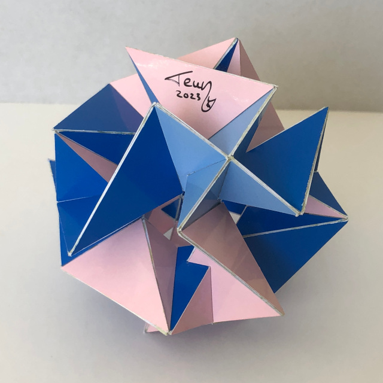

Compound of Three Stephanoids

Here you can see a compound of three stephanoids. A stephanoid, or crown polyhedron, is a self-intersecting polyhedron with dihedral symmetry consisting of butterfly faces. This particular compound is organised in such a way that the dihedral axes of the stephanoids are all orthogal.
The most logical way of colouring the model with three colours would be to give each stephanoid its own colour, but I chose something else here. The colouring is still symmetric though: one colour is mapped on itself by a dihedral symmetry from one of the stephanoids. I thought this way of colouring was more pleasing.
As you can see the model was finished in March 2023 after a suggestion from Ulrich Mikloweit. He found this one by starting with a rhombic cuboctahedron, which is the convex hull of this compound.
Links
- Thumbnails
- All stellations from the book "The 59 icosahedra" in one table as interactive models
- Teun's Polyhedra
- Home
Last Updated
2023-06-18